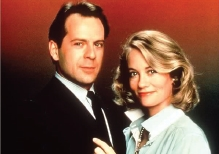

Yayınlanacağı gün ekranın karşısına geçip dakikaları saydığım bir dizi vardı. Gençlerin çoğunun da benim gibi beklediğini düşünürüm. Ve o an gelir, güzel bir müzik eşliğinde jenerik akmaya başlardı. “Buyurun Mavi Ay Dedektiflik Bürosu, derdiniz mi var, kendinizi mi kaybettiniz, kocanız sizi aldatıyor mu, akşamları uyuyamıyor musunuz...” diye devam eden konuşmasıyla yarım akıllı sekreterimiz Bayan Topesto’nun telefon açışı, unutulmaz bir andır.
Birbirine zıt iki karakter olan David ile Mady’nin bol diyaloglu çekişmeleri, her macerada yapılan yanlış anlamalar, beceriksizlikler ama işin muhakkak çözülmesi ve zamanının önünden giden espri anlayışıyla Mavi Ay, resmen bir televizyon klasiğidir.
Erkeklerin hayallerini süsleyen o sarışın kadın ve tabii ki Bruce Willis. Kendisine ayrıca bu ismin okunuşunu bize öğrettiği için de teşekkür etmeliyiz. Yoksa biz hep Bruce Lee’ye Buruçli diyecektik.
Her sezon David’in saçları biraz daha dökülürdü, ben buna üzülürdüm. Ama ona yakışıyormuş.
David ve Mady, aralarındaki gizli beğeniler, birbirlerine ara sıra yaptıkları kurlarla, belki de ekranların en yakıştırılan çiftiydiler. Taa ki o pis adam! (Mark Harmon) diziye girene kadar.

David’in pabucu bir süreliğine dama atılmış, ben de ona o kadar üzülmüştüm ki, hâlâ Mark Harmon’u pek sevmem.
Bana göre “Gülşen Abi” en iyi yerli komedi dizisi, en iyi yabancı komedi de “Mavi Ay”dır. Bir daha bu kadar güzel yapım zor olur diye düşünüyorum. Ama yine Sezar’ın hakkını Sezar’a verelim ve Bruce Willis’e o eşsiz sesi ve yorumuyla hayat veren sevgili, rahmetli Alev Sezer’e şükranlarımızı sunalım.
Dizi daha sonra yeniden yayınlanmıştı, çok uzun seneler sonra. Seslendiren başka biriydi. Belki onun da etkisiyle, tekrar yayınları o kadar da güzel gelmemişti.
Sekiz Çocuklu Aile de TRT dizilerinden biridir. Kalabalık bir ailenin anlatıldığı, komediye daha yakın türde bir yapımdı. Çok net hatırlamamakla beraber, tombul kırmızı suratlı bir baba ve birbirinden zıpır çocuklar olduğunu biliyorum.
Harold Lloyd Show sessiz komedi türüne bir örnektir. Çoğunlukla takım elbise, gözlük ve kafasında kısa bir silindir şapka ile gördüğümüz Sakar Harold, ne kadar durumunu düzeltmeye kalksa da şanssızlık bir türlü yakasını bırakmaz, o kaçtıkça kaderi peşini bırakmazdı.
Buradaki kahramanımızın düştüğü durumlar göz önüne alındığında eski komedyenlerin biraz da akrobat olmak zorundalığı vardı sanki. Yüksek inşaatların tepelerinde, kafasında bir kova olduğu halde oradan oraya tehlikeli hareketlerle yürüyüp dururdu Harold. Bir zaman gelir, bir saat kulesinde akrep ve yelkovana asılı görürdük. Bir bakarız, itfaiye hortumu ile uğraşır, bir bakarız, bisikletle türlü hokkabazlıklar yapardı. Bir zamanlar “Herıld Yani,” diye bir söz çıkmıştı. Kaynağı bu adam ve düştüğü durumlar olabilir!
Siyah-Beyaz dünyanın en sevimli, en renkli çiftleri Laurel-Hardy sayılabilir. Aksaklık ve hata üzerine kurulu bir ilişki ve bunun getirdiği komik durumlar olurdu. Çiftin birbirine tam zıt vücut yapıları ve karakterleri bizleri çok güldürürdü.
Gerçi bir seksenler fenomeni değil daha önceki senelere ait bir yapımdır, fakat biz o zaman tanımıştık onları ve çok sevmiştik. Bizim evdeki isimleri “Amcamlar”dı. Bu ismi kim koydu, neden böyle bir adları vardı ve sadece bizim evde mi böyleydi? Gerçekten bilmiyorum. Annemin kardeşimle beni sokaktan toplamak için “Haydi çocuklar, eve gelin Amcamlar başladı,” demesini hatırlıyorum. Vakitli-vakitsiz çağırılmamızın bir nedeni ne zaman yayınlanacağının belli olmamasıydı.
Bürokrasinin elinde oyuncak haline gelen bir bakanın anlatıldığı İngiliz komedisi Emret Bakanım’da faydalı işler yapmaya çalışan acemi ve biraz saf karakterli bakan, bürokrasiyi temsil eden yardımcısı karşısında bolca bocalardı. Kurnaz bürokrat öyle ayarlardı ki işleri, sonunda kendi dediğini yaptırırdı. Arada bir problem olursa ortak kanaat geliştirirlerdi.
Bu bakan ilerleyen yıllarda başbakanlığa yükselmiş ve dizi “Emret Başbakanım” olarak devam etmişti.
Webster da seksenlerin en dikkat çeken dizilerinden biriydi. Bastıbacak, ukala, Webster ve bunu evlat edinen Rum asıllı eski futbolcu bir adam ve karısının maceraları anlatılırdı. Oya Küçümen'in sesiyle hayat bulan karabiber Webster'ı halkımız pek sevmişti. Webster'ın aslında çocuk değil otuz yaşlarında bir adam olduğu, bir hastalık yüzünden böyle küçük kaldığı söylenip dururdu.
Murphy Brown’da Sarışın ve yalnız yaşayan gazeteci kadın, bir haber dergisinde çalışıyordu. Tabii derginin çalışanları envai tipte insanlardı. Korki adında komik bir kadın vardı
Bir grup lise öğrencisinin maceralarını anlatan Zil Çalınca adlı dizinin başrolündeki karakter Zack, sarışın yakışıklı bir çocuktu. Kızlarla başı sürekli derde girer, Screech adındaki (bu tür filmlerde yardımcı karakter olan tiplerden) embesil arkadaşı ise olayları daha da karıştırır, başları beladan kurtulmazdı.
Gümüş Kaşıklar Richie Rich'in dizi versiyonu sayılabilir. Ricky Schroeder de tip olarak Richie Rich’in benzeri, sarışın bir çocuktu.
Hikâye, çok zengin ama çocuk ruhlu bir adamın, yaşadığı bir haftalık evlilikten bir oğul sahibi olduğunu öğrenmesiyle başlıyordu. Adam oğlunu muhteşem malikânesine getirince farklı bir hayat başlamıştı. Çünkü babası oyuncak fabrikası patronu idi ve malikâne inanılmaz oyuncaklarla, uzayıp giden trenler, kocaman oyun makineleri, bilardo, tilt, gibi eşyalarla doluydu evde gönlünce eğleniyordu.
Evli ve Çocuklu: Bu dizi her ne kadar Türkiye’de o yıllarda seyredilememiş olsa da, bahsetmeden geçemeyeceğim bir dizidir. Birbirlerinden neredeyse nefret eden bir aile anlatılıyordu. Bunun ve buradaki tiplerin bizim aile yapımızla uygun olduğu elbette söylenemez. Hayattan bezmiş sefil bir aile olan Bundyler'in hayatı anlatırdı. Abazan oğul Bud ve aptal sarışın ablası Kelly mütemadiyen didişirler, anneleri Peggy gününü televizyon karşısında geçirip kocasının cüzdanını yağma etmenin yeni yollarını bulmaya çalışırdı. Ailenin babası, bir idol haline gelen Al Bundy idi.
Al bütün gün hiç sevmediği halde bir ayakkabıcıda çalışır, akşam eve geldiğinde Peggy buna bir kap yemek bile vermezdi. Uyuz komşuları dominant Marcy ile kocaları (önce Steve sonra Jefferson) damlarlardı sürekli bunların evlerine. Her geldiklerinde hava atacak bir şeyleri olurdu.
Yıllar geçtikçe Al'ın saçları seyreldi, göbeği büyüdü, ama yaşlandıkça filozofluğu da tavan yapmaya başlamıştı. Kelly daha da serpilmiş, kadersiz, zeki ama gıcık Bud’ın sakalları çıkmıştı.